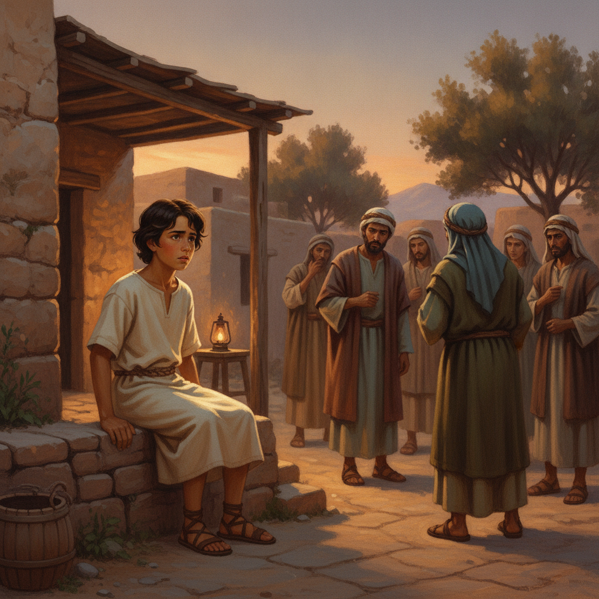
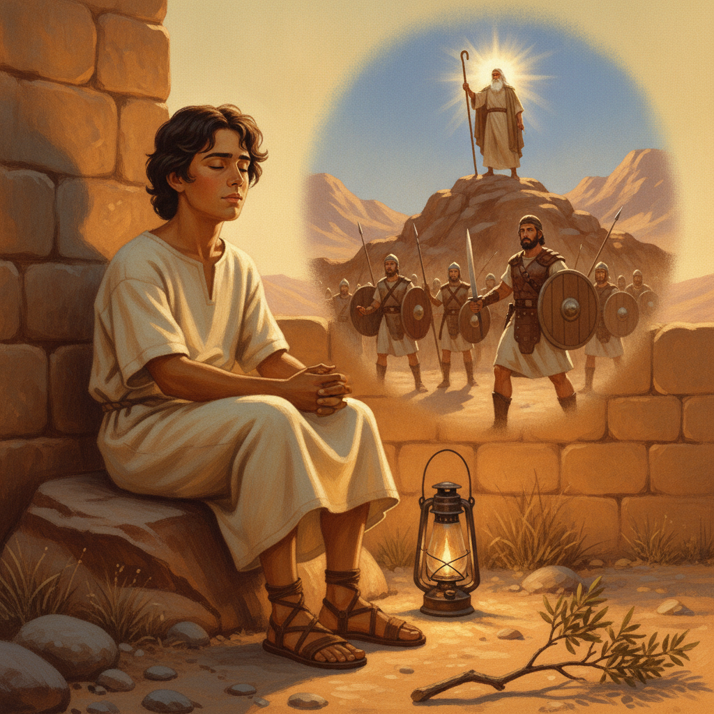
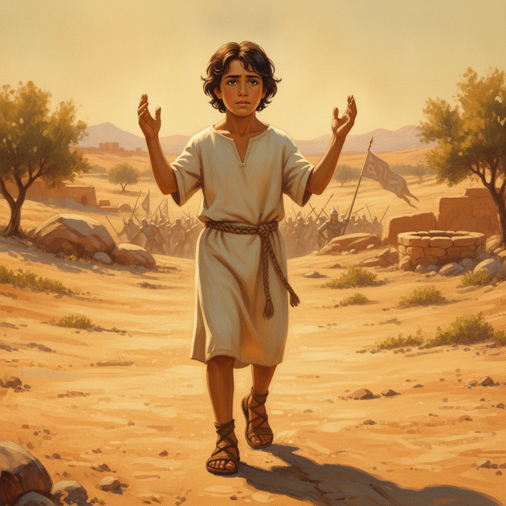

6 / 10

하지만 모세 할아버지는 나이가 많고 힘이 빠져서, 종일 손을 들고 있기가 너무 힘들었단다. 할아버지의 팔이 점점 무거워지고, 결국 두 손이 스르륵 내려오기 시작했지. 손이 내려오자마자 우리 백성들은 다시 아말렉에게 밀리기 시작했어. 아담은 모세 할아버지의 피곤하고 힘겨운 모습을 상상하며 안타까워했어요. '혼자서는 아무리 노력해도 안 되는 일이 있구나. 모세 할아버지도 이렇게 힘들어하시는데….'
어린이를 위한 말씀 이야기
아담은 햇볕 쨍쨍한 광야에서 아빠와 함께 양들을 돌보고 있었어요. 끝없이 펼쳐진 모래 언덕을 보니 마음이 괜히 무거웠죠. 작은 양 한 마리가 길을 잃을까, 뜨거운 햇살이 너무 힘들까, 아담의 마음속에는 늘 작은 걱정들이 스물스물 피어올랐어요. 이 모든 것을 혼자 힘으로 해낼 수 있을까 하는 생각이 들 때마다 어깨가 축 처지곤 했답니다. '아, 나에게도 누군가의 도움이 필요할 때가 있지 않을까?' 하고 혼잣말을 하기도 했어요.

어느 날 저녁, 아담은 어른들의 이야기를 엿들었어요. 마을 어른들은 웅성거리며 어려움과 고통에 대해 이야기했죠. 「아말렉처럼 또 다른 문제가 닥칠까 두렵다」는 말도 들렸어요. 아담은 '아말렉이 대체 뭘까?' 하고 궁금했지만, 어른들의 얼굴에 드리운 걱정스러운 그림자를 보며 마음이 몹시 불안했어요. 마치 커다란 그림자가 온 마을을 덮치는 것 같았고, 알 수 없는 두려움이 가슴속을 파고들었죠.
아담의 할아버지가 아담의 얼굴을 보더니 따뜻하게 웃으며 손을 잡았어요. 「무슨 걱정이라도 있니, 아담아?」 아담은 고개를 끄덕였죠. 할아버지는 아담을 데리고 작은 모닥불 옆에 앉아 옛날이야기를 시작했어요. 「옛날에 우리 조상들이 광야를 지날 때, 아말렉이라는 족속이 갑자기 쳐들어왔단다.」 할아버지의 목소리는 신비롭게 울렸어요. 아담은 할아버지의 이야기에 귀를 기울였습니다.

할아버지는 이야기를 이어갔어요. 「모세 할아버지는 여호수아에게 병사들을 이끌고 나가 아말렉과 싸우라 했지. 그리고 자신은 하나님의 지팡이를 들고 산꼭대기에 오르겠다고 말씀하셨단다. '나는 위에서 하나님께 기도하겠다!' 하셨던 거야.」 아담은 눈을 감고 상상해 보았어요. 칼을 든 용감한 여호수아, 그리고 멀리 보이는 산꼭대기에서 하늘을 향해 지팡이를 든 모세의 모습이 생생하게 그려졌어요.

「모세 할아버지가 두 손을 높이 들면 우리 백성이 싸움에서 이겼고, 손을 내리면 아말렉이 이기는 이상한 일이 벌어졌단다.」 할아버지의 말에 아담은 눈을 깜빡이며 깜짝 놀랐어요. '어떻게 손만 들고 있는 것으로 싸움이 이기고 지는 거지? 마법인가?' 아담은 작은 손을 들어 모세 할아버지를 따라 하늘을 향해 해 보았어요. 마음속으로 '하나님, 우리 조상들을 도와주세요! 이겨라, 이겨라!' 하고 힘껏 속삭였죠.
하지만 모세 할아버지는 나이가 많고 힘이 빠져서, 종일 손을 들고 있기가 너무 힘들었단다. 할아버지의 팔이 점점 무거워지고, 결국 두 손이 스르륵 내려오기 시작했지. 손이 내려오자마자 우리 백성들은 다시 아말렉에게 밀리기 시작했어. 아담은 모세 할아버지의 피곤하고 힘겨운 모습을 상상하며 안타까워했어요. '혼자서는 아무리 노력해도 안 되는 일이 있구나. 모세 할아버지도 이렇게 힘들어하시는데….'

「그때 아론과 훌이라는 두 사람이 모세 할아버지 옆으로 다가와서, 무거운 돌을 가져다 앉게 했어. 그리고 한 사람은 이쪽에서, 다른 한 사람은 저쪽에서 모세 할아버지의 팔을 붙들어 높이 올려 주었단다!」 할아버지의 말에 아담의 눈이 반짝였어요. '아, 혼자가 아니었구나! 피곤할 때 서로 도와주니 다시 힘을 낼 수 있었어. 함께 기도할 때 더 큰 힘이 생기는구나!' 아담은 이 깨달음에 마음이 뭉클해졌죠.

해가 질 때까지 모세 할아버지의 손은 아론과 훌의 도움으로 내려오지 않았단다. 결국 우리 조상 이스라엘은 아말렉과의 싸움에서 크게 이겼어! 여호수아와 병사들은 승리의 함성을 질렀지. 아담은 이야기에 흠뻑 빠져들며, 마음속으로 '와, 정말 멋진 승리다!' 하고 외쳤어요. 하나님의 힘과 함께, 서로 돕는 마음이 이룬 기적이었죠. 온 땅에 승리의 노래가 울려 퍼졌어요.

싸움이 끝나고, 모세 할아버지는 제단을 쌓고 그 이름을 '여호와 닛시'라고 불렀단다. '여호와 닛시'는 '여호와는 나의 깃발, 나의 승리'라는 뜻이야. 「하나님께서 우리를 위해 대대로 싸워주실 것이라고 맹세하셨단다.」 할아버지의 목소리가 확신에 차 있었어요. 아담은 고개를 끄덕이며 '맞아, 하나님이 우리를 위해 싸워주시면 걱정할 필요 없겠다!' 하고 생각했죠. 이제 더 이상 두려움이 없었어요.

이제 아담은 알게 되었어요. 세상의 어떤 어려운 일 앞에서도 혼자 힘으로 싸우려 애쓸 필요가 없다는 것을요. '맞아! 나는 하나님께 두 손 들고 기도할 수 있어. 그리고 힘든 일이 있으면 친구나 가족에게 도와달라고 말할 수 있지!' 아담의 얼굴에 환한 미소가 피어났어요. 작은 아담이지만, 이제 어떤 어려움도 두렵지 않았죠. 하나님이 언제나 함께 싸워주시고, 좋은 친구들도 곁에 있다는 걸 깨달았으니까요. 아담의 마음에는 평화가 가득했습니다.
설교는 출애굽기 17장 8-16절, 르비딤에서 이스라엘과 아말렉의 전투 이야기를 다룹니다. 이스라엘 백성은 애굽에서 나와 홍해를 건너고 광야에서 만나, 메추라기, 반석에서 물이 나오는 기적을 경험하며 하나님의 은혜를 누리던 때였습니다. 그런데 예상치 못하게 아말렉 족속의 급습을 받게 됩니다. 목사님은 이 본문을 통해 그리스도인들의 일상 가운데 닥쳐오는 '영적 전쟁'과 그 전쟁을 승리로 이끄는 '기도'의 중요성을 강조합니다. 특히 전도와 같이 하나님이 기뻐하시는 큰 일일수록 사탄의 방해가 더욱 치열하다는 점을 부각하며, 이에 맞서는 영적 전략으로서 기도를 선택한 모세의 모습을 주목합니다.
설교는 '현실의 문제 인식'에서 시작하여 '영적 해결책 제시'로 나아갑니다.
문제 제기: 우리의 삶은 크고 작은 영적 전쟁의 연속입니다(에베소서 6:12). 사탄은 세상 사람보다 오히려 하나님을 사랑하고 따르려는 그리스도인들을 집중적으로 공격합니다. 특히 한 영혼이 주님께 돌아오는 '전도'의 사명은 사탄이 가장 치열하게 방해하는 일입니다. 우리의 일상에 예기치 않게 찾아오는 아말렉의 급습처럼, 영적인 방해와 유혹은 언제든 우리를 넘어뜨리려 합니다.
해결책 제시: 모세는 아말렉의 공격 앞에서 자신의 지혜나 힘을 의지하지 않고, 하나님의 지팡이를 잡고 산꼭대기에 올라 기도합니다. 이는 목숨을 건 '사생결단'의 기도, 오직 하나님만이 승리하게 하실 수 있다는 '전적인 의탁'의 기도였습니다. 설교자는 기도가 단순히 소원을 아뢰는 것을 넘어, '하나님을 적극적으로 의지하는 고백'이라고 설명합니다. 마가복음 9장 29절을 인용하여 '기도 외에는 이런 종류가 나갈 수 없다'고 강조하며, 기도가 영적 전쟁의 유일하고 최고의 전략임을 역설합니다. 우리가 손을 들고 기도할 때, 우리의 힘은 빠지지만 하나님의 능력은 더해져 하나님이 우리 대신 싸우신다고 말합니다.
승리와 연합: 하나님은 모세의 기도를 들으시고 아말렉을 없이하여 기억도 못 하게 하시겠다고 약속하십니다('여호와 닛시' – 여호와는 나의 깃발). 이는 일회적인 승리가 아니라 '대대로' 하나님이 싸워주시는 영원한 승리를 의미합니다. 또한 설교자는 모세의 팔이 피곤할 때 아론과 훌이 그의 팔을 붙들어 올린 것처럼, 혼자가 아닌 '기도 동역자'들과 함께 연합하여 기도할 때 '곱하기의 은혜'가 임한다고 강조합니다. 서로의 팔을 붙들어 주는 기도의 스크럼을 통해 더욱 강력한 기도의 역사가 일어난다는 것입니다.
이번 주에 나는 내 삶과 가족, 교회, 그리고 나라와 민족을 위한 기도의 중요성을 다시금 붙잡고, 매일 정해진 시간에 하나님 앞에 나아가 간절히 기도하는 시간을 가지겠습니다. 특히 '혼자 힘으로는 안 된다. 하나님이 도와주셔야 한다'는 모세의 절박한 심정으로, 단순히 소원을 아뢰는 것을 넘어 나의 모든 문제를 하나님께 온전히 맡기는 기도를 하겠습니다. 또한, 기도하다가 지치거나 낙심될 때, 주변의 믿음의 동역자들에게 기도를 요청하고 함께 중보하며 서로의 팔을 붙들어 주는 '기도의 스크럼'을 적극적으로 만들어가겠습니다. 나의 연약함을 인정하고 하나님의 전능하심을 의지하는 기도의 삶을 살겠습니다.